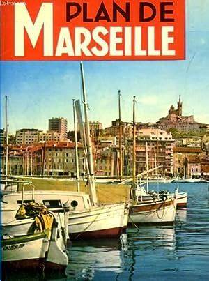
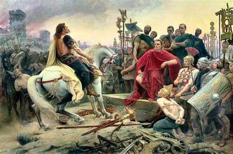
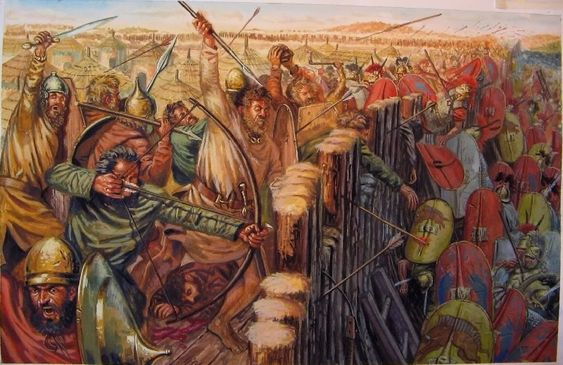

Histoire de marseille
L'histoire de Marseille retrace les 2 600 ans de la cité depuis sa fondation.
Bien que son site soit occupé dès les temps préhistoriques comme en témoigne la grotte Cosquer, la ville est fondée en 600 av. J.-C. par des colons grecs venus de Phocée. Elle deviendra la principale cité grecque de la Méditerranée occidentale et principale porte de communication entre les civilisations grecque et gauloise.
Romaine après sa conquête par Jules César en 49 av. J.-C., éclipsée par Arles, elle reprend peu à peu son rang et devient après les conquêtes des Wisigoths puis des Francs jusqu'au xiie siècle, l'une des places majeures de l’Église romaine dans le sud-est de la France grâce à l'influence de l'abbaye de Saint-Victor fondée par Jean Cassien.
Au Moyen Âge, Marseille décline et subit la peste noire et des temps troublés qui s'achèvent au xve siècle, alors que la ville et le duché de Provence deviennent possession française, d'où un rôle nouveau dans l'affirmation de la puissance royale et le développement du commerce méditerranéen.
Acquise à la Révolution, mais non aux Jacobins, la ville connaît une très forte expansion au xixe siècle avec le développement industriel et commercial en lien avec l'importance croissante de l'empire colonial français. Après les destructions durant la Seconde Guerre mondiale et la fin de l'empire français, Marseille se relève pour retrouver, à la fin du xxe siècle, une situation plus favorable.

Avant la fondation de Massalia
L'espace côtier de Marseille est occupé au Paléolithique supérieur par les hommes ainsi qu'en témoigne la découverte en 1991 de la grotte Cosquer, dans l'une des calanques de Marseille, à environ six kilomètres au sud de l'actuel site de la ville. L'occupation de ce qui pourrait être, selon Jean Clottes, un « sanctuaire » a eu lieu à deux périodes : vers 27 000 ans et de 19 000 à 17 000 ans avant le présent, comme l'atteste la datation des peintures pariétales1.
Pour la période plus récente, des fouilles ont mis au jour des vestiges d'une implantation néolithique qui remonte à 6000 av. J.-C., près de la gare Saint-Charles2. D'autres vestiges ont été découverts dans les grottes de L'Estaque, comme dans celle du quartier Les Riaux où furent retrouvés un foyer et des poteries mésolithiques en terre noire3.

Ligures
Au dernier millénaire avant notre ère, la région était occupée par les Ligures, peuple autochtone qui pourrait avoir connu des invasions celtes. De même, les habitants de cette côte purent entrer en contact avec des commerçants Phéniciens, Étrusques notamment, mais aussi ibères4. Aux alentours du site de Marseille, dominait un peuple celto-ligure, les Salyens, dont l'oppidum était Entremont, près de l'actuelle Aix-en-Provence.
D'après les auteurs anciens, le terroir marseillais aurait été occupé par une tribu celto-ligure, celle des Ségobriges, qui se serait implantée dans les collines autour du site de Marseille, les contreforts du Massif de Marseilleveyre étant le plus souvent mentionnés.
